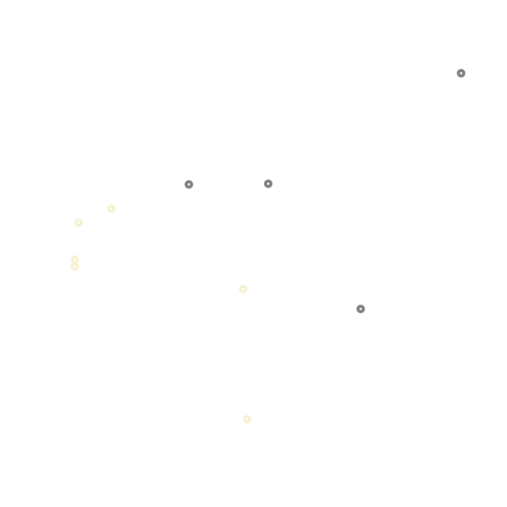
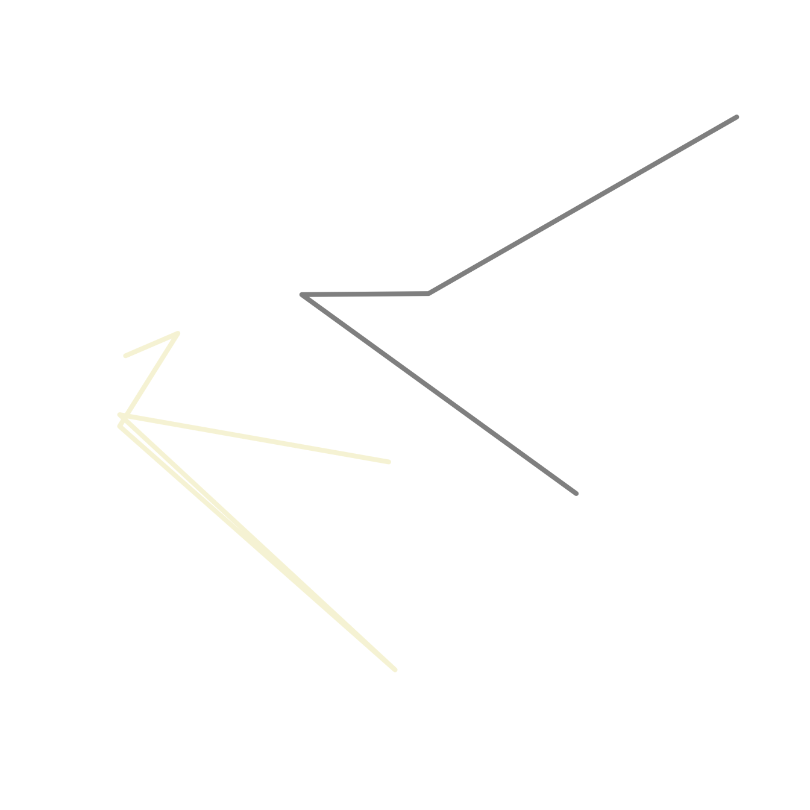
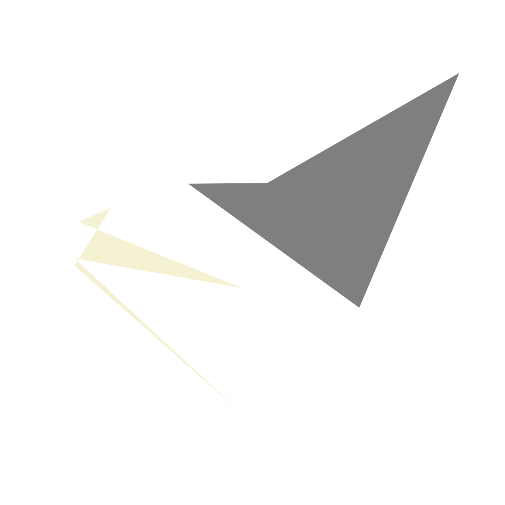
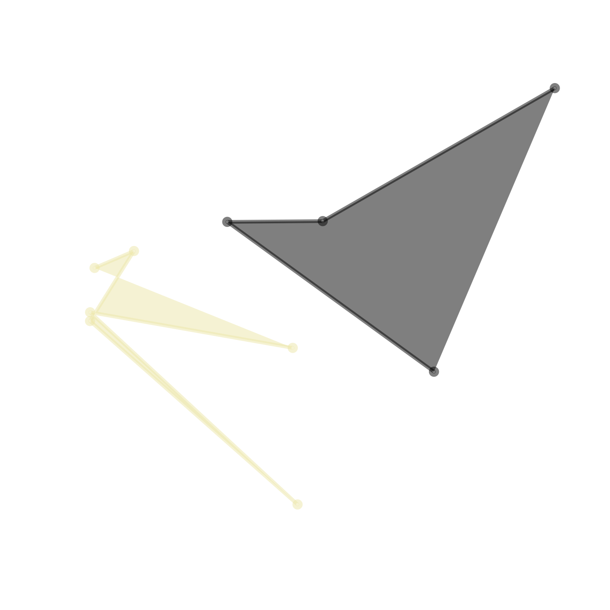
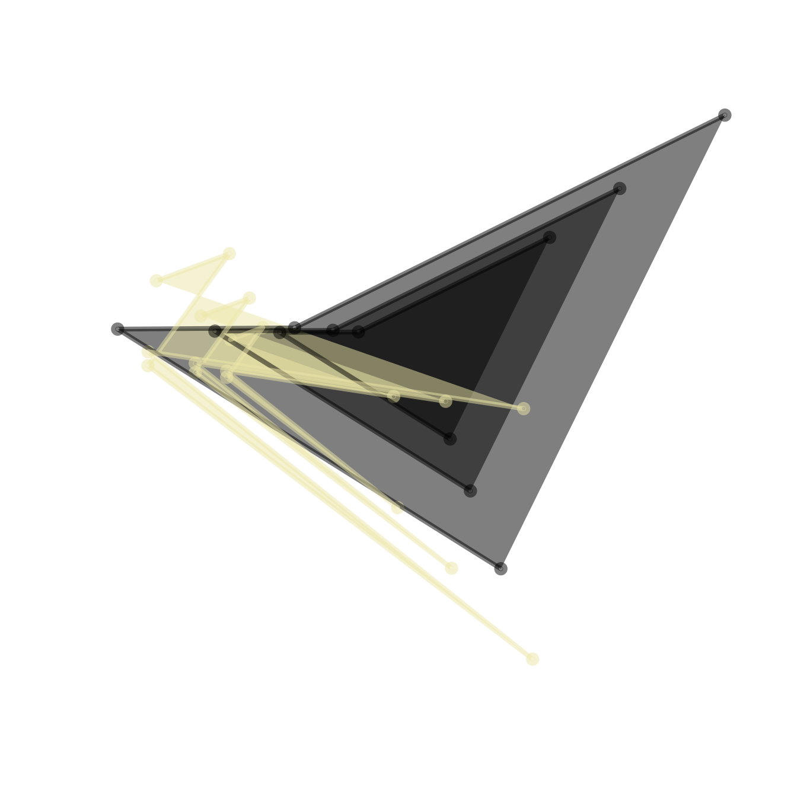

getting_started.RmdBefore we can draw, we need some inspiration! Lets make some random points. 😄 We can also add random groups (add independent plotting characteristics based on group ID) for points and calculate their centers of mass. Lets make 10 parts and 2 groups. To reproduce all of the plots use seed= 777.
library(randomviz)
parts<-obj<-make_parts(part_n,group_n,seed = seed) %>%
get_centers() %>%
obj_dims() %>%
get_colors(alpha=alpha,seed=seed)
str(obj)
#> List of 4
#> $ parts :List of 2
#> ..$ 1:'data.frame': 4 obs. of 3 variables:
#> .. ..$ x : num [1:4] 1.639 0.621 0.203 1.109
#> .. ..$ y : num [1:4] 2.311 0.972 0.965 -0.544
#> .. ..$ group: int [1:4] 1 1 1 1
#> ..$ 2:'data.frame': 6 obs. of 3 variables:
#> .. ..$ x : num [1:6] 0.49 -0.399 0.511 -0.399 -0.206 ...
#> .. ..$ y : num [1:6] -0.3043 0.0542 -1.8809 -0.0338 0.6712 ...
#> .. ..$ group: int [1:6] 2 2 2 2 2 2
#> $ centers:List of 2
#> ..$ 1:'data.frame': 1 obs. of 3 variables:
#> .. ..$ x : num 0.893
#> .. ..$ y : num 0.926
#> .. ..$ group: int 1
#> ..$ 2:'data.frame': 1 obs. of 3 variables:
#> .. ..$ x : num -0.0637
#> .. ..$ y : num -0.165
#> .. ..$ group: int 2
#> $ dims :'data.frame': 2 obs. of 2 variables:
#> ..$ x: num [1:2] -0.399 1.639
#> ..$ y: num [1:2] -1.88 2.31
#> $ colors :List of 2
#> ..$ 1: chr "#00000080"
#> ..$ 2: chr "#EEE8AA80"Lets take a look at what this looks like.
init_plot(obj)
plot_obj_fun(obj,fun='points',lwd=4)
We can also view this as lines or polygons.
init_plot(obj)
plot_obj_fun(obj,fun='lines',lwd=4)
init_plot(obj)
plot_obj_fun(obj,fun='polygon',lwd=4,border=NA)
We can also combine all three!
init_plot(obj)
plot_obj_fun(obj,fun='lines',lwd=4)
plot_obj_fun(obj,fun='polygon',lwd=4,border=NA)
plot_obj_fun(obj,fun='points',lwd=4,)
Now lets move the points!👍 We can do so in the following ways.
Lets attract the points to their group centers. We can do this in 3 steps.
obj <- parts %>%
points_linear_attractor(.,
attract = T,
increment = increment,
iter = iter) %>%
obj_dims() %>%
get_colors(alpha=alpha,seed=seed)
init_plot(obj)
plot_obj_fun(obj,fun='polygon',lwd=4,border=NA)
plot_obj_fun(obj,fun='points',lwd=4)
plot_obj_fun(obj,fun='lines',lwd=4)
We can also repel all points from their group centers.
obj <- parts %>%
points_linear_attractor(.,
attract = F,
increment = increment,
iter = iter) %>%
obj_dims() %>%
get_colors(alpha=alpha,seed=seed)
init_plot(obj)
plot_obj_fun(obj,fun='polygon',lwd=4,border=NA)
plot_obj_fun(obj,fun='points',lwd=4)
plot_obj_fun(obj,fun='lines',lwd=4)Next lets rotate all parts around their centers and animate the results. 🐔
angles<-seq(0,360, by=90)
obj<- parts %>%
rotate_obj_angles(.,angles) %>%
obj_dims() %>%
get_colors(alpha=alpha,seed=seed)
plot_fun<-function(index){
init_plot(obj)
for(i in 1:index){
plot_obj_fun(obj,index=i,fun='polygon',cex=1,border=NA)
plot_obj_fun(obj,index=i,fun='points',cex=1)
plot_obj_fun(obj,index=i,fun='lines', lwd=1)
}
}
f<-function(parts){
for(i in 1:length(obj$parts)){
plot_fun(i)
}
}
invisible(save_gif(f(), "imgs/plot1.gif", delay = 0.3, progress = FALSE))
include_graphics("imgs/plot1.gif") Now that we have the basic bulding blocks, lets get random! 🧜♀️
First lets experiment with line plots.
part_n<-250
group_n<-25
seed<-777
iter<-5
increment<-.5
alpha<-.8
zoom<-.7
obj<-make_parts(part_n,group_n,seed = seed) %>%
get_centers() %>%
obj_dims(zoom=zoom) %>%
get_colors(alpha=alpha,seed=seed)
plot_fun<-function(index){
init_plot(obj)
for(i in 1:index){
plot_obj_fun(obj,index=i,fun='lines',cex=1,lwd=4)
}
}
invisible(save_gif(f(obj), gif_file= "imgs/plot2.gif", delay = 0.3, bg='black'))
include_graphics("imgs/plot2.gif") The plot above shows randomly generated lines for 250 points split among 25 groups.
Next lets add some polygons.
plot_fun<-function(index){
init_plot(obj)
for(i in 1:index){
plot_obj_fun(obj,index=i,fun='polygon')
plot_obj_fun(obj,index=i,fun='lines',cex=1,lwd=4)
}
}
invisible(save_gif(f(obj), gif_file= "imgs/plot3.gif", delay = 0.3, bg='black'))
include_graphics("imgs/plot3.gif") Now lets add some rotations and zoom out a bit.
obj<-obj %>% rotate_obj_angles(.,angles) %>%
obj_dims(zoom=-.25) %>%
get_colors(alpha=alpha,seed=seed)
plot_fun<-function(index){
init_plot(obj)
for(i in 1:index){
plot_obj_fun(obj,index=i,fun='polygon')
plot_obj_fun(obj,index=i,fun='lines',cex=1,lwd=4)
}
}
invisible(save_gif(f(obj), gif_file= "imgs/plot4.gif", delay = 0.2, bg='black'))
include_graphics("imgs/plot4.gif")